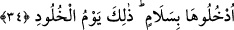
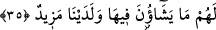

et-Te’vîlâtü’n-Necmiyye’de şöyle geçer: Rabbine münîb, mâsivâdan yüz çevirmiş ve
bütünüyle kendisine yönelmiş bir bir kalp ile gelen.
34. Oraya selâmetle girin. İşte bu, ebedî hayatın başladığı gündür.
“Oraya selâmetle girin.” Onlara “cennete girin” denir. Emrin cemi sîgasıyla gelişi,
bir önceki âyette geçen “min” lâfzından kaynaklanmıştır.
“Selâm ile” ifadesi, mahzuf bir kelimeye müteallaktır. Cennete girmeleri istenen
kimselerin halini bildirir. Yani bu kimselere “azaptan, nimetlerin zeval bulmasından ve
intikamla karşılaşmaktan sâlim bir vaziyette cennete girin” denmektedir. Âyetin “Allah
ve melekleri cihetinden gelen selâm ile cennete girin” şeklinde anlaşılması da
mümkündür.
“İşte bu, ebedî hayatın başladığı gündür.” “Zâlike” edatı, zikredilen iş ve
eylemlerin, bir kısmında gerçekleştiği sürüp giden zamana işâret eder.
“Sonsuzluk günü”, cennette bâki olmak anlamına gelir. Zira cennette kalmanın hiçbir
zaman sonu gelmeyecektir.
Râğıb bu konuda şöyle der: “Hulûd, bir şeyin fesâda maruz kalmaktan korunması ve
olduğu hal üzere bâki olmasıdır. Araplar, değişimi ve fesada uğrayışı çok uzun süren
şeyleri bu kelimeyle nitelerler. “Günler sonsuz” ifadesinde olduğu gibi. Günün
sonsuzlukla nitelenmesi, çok uzun sürmesinden ötürüdür, yoksa sürekli bâki
kalmasından dolayı değildir. Cennetteki hulûd, onun içindeki varlıkların oluş ve
bozuluşa maruz kalmadan oldukları hâl üzere kalmalarıdır.
Sa’dî Müftî de şöyle der: Allahu a’lem, bu âyette selâmet vaktine işâret edilmesi
uzak bir ihtimal değildir. Böylelikle âyet, azaptan ve nimetlerin zevâl bulmasından
sâlim kalışın onlar için ebedi surette hâsıl olduğuna, sadece cennete giriş vaktiyle
sınırlı kalmayacağına delalet etmiş olur.
35. Orada kendileri için diledikleri her şey vardır. Katımızda dahası da vardır.
“Orada kendileri için diledikleri her şey vardır.” İstedikleri şeyler her ne türden
olursa kendilerine verilecektir. Ancak bunun tek istisnâsı, hikmetin alıkonmasını
gerektirdiği şeylerdir. Bunlar da dünyada hiçbir şekilde hoş karşılanmayan livata ve
benzeri şeylerdir. Zaten cennet ehli de daha önce aktarmış olduğumuz üzere Allah’ın
kendilerini muhal veya yasaklanmış arzulardan koruyacağı için böyle şeyleri istemezler.
Kuşeyrî şöyle der: Cennet ehline: “Siz dünyada Allah ne dilerse o olur dediniz,